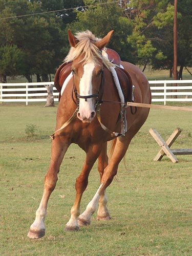

Angel Angel's back at the house to start getting
ready for
fox hunting this fall. Her first lesson
back under tack went
great. She pulled toward the other horses
some, but settled
in quickly and was very obedient. Chrissie
tried a few things
and said that she seems quite willing
to learn. She bends,
understands leg, and is a fairly uncomplicated
ride.
She was out at the kennels last Saturday
and let the hounds
lick her nose and was unconcerned when
we left her by the kennels
and went riding off in the woods. This
weekend we'll see what
she thinks of going off in the woods herself.
I think we're going to have fun.
Trying her out with the side reins
on. She was a little hesitant to go forward right off, but listened when
Chrissie said it was ok.
She gave nicely to the bit and only
chewed when she was thinking.
Stretching forward and reaching for
the bit.

Balancing herself on the corners.
She stood still for mounting and let
Chrissie get settled. A little tap to encourage the walk off, but no resistance
about the whip. She relaxed almost immediately, although she has a good
marching walk.
Chrissie asking her to lengthen a
little and using the whip to encourage. It's so nice when they understand
what the whip is for and aren't bothered if you use it.
Getting some more reach in the walk.
She's steady in the bridle, but did
a little grinding.
She shortens her neck more than some,
but here she's listening to Chrissie's inside leg for the bend around the
corner.
Chrissie took her out of the ring
to let her stretch out a bit.
She had to work a bit more going uphill.
Coming downhill Chrissie did some
half halting to remind her to balance. It looks like it worked. She's keeping
her weight on her hind quarters pretty well.
We were so pleased to get a steady
pace, steady head and calm horse. She was concentrating on Chrissie and
had stopped thinking of the other horses in the pasture.
Doesn't look like she has any experience
with jumping. She was careful and obedient, but a bit confused.
The cavalletti didn't confuse her
nearly as much as the trot poles. Walking was ok....
But trotting got a few different responses.
It's nice to see how a horse reacts
to stress. These aren't pretty pictures, but she got the job done.
It was nice to see how relaxed she
was between trot pole sets.
Oh, and Chrissie tested out her bending
with a figure eight at one end of the ring. Quite nice.
And the other direction. Angel wasn't
completely sure, but she was willing to try.
And one final trot out in the field
before letting her cool down. I rode her to cool her down, so no pictures
of that....